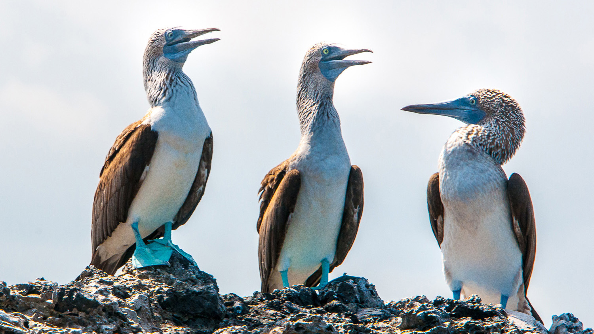
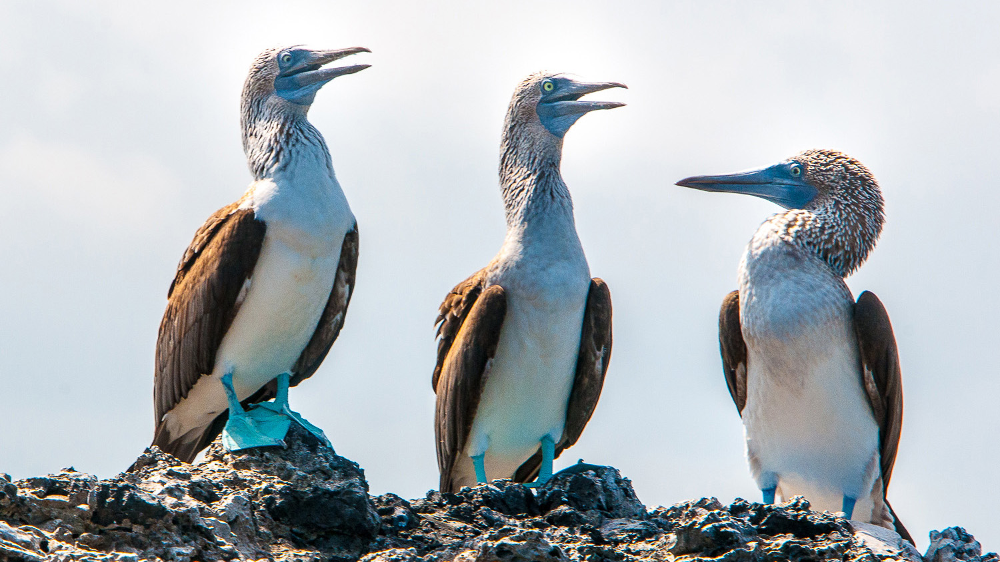
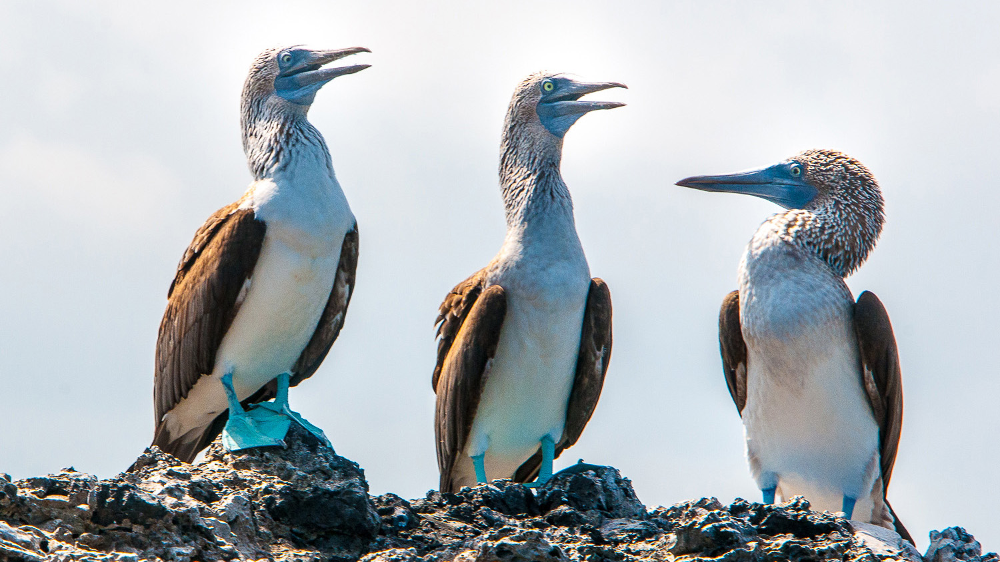

The Galapagos Islands, located about 1,000 kilometers off the coast of Ecuador in the Pacific Ocean, are renowned for their unique biodiversity, stunning landscapes, and historical significance. The islands are famous for inspiring Charles Darwin's theory of evolution by natural selection. The archipelago is a UNESCO World Heritage Site and a true paradise for nature enthusiasts and adventure seekers.
